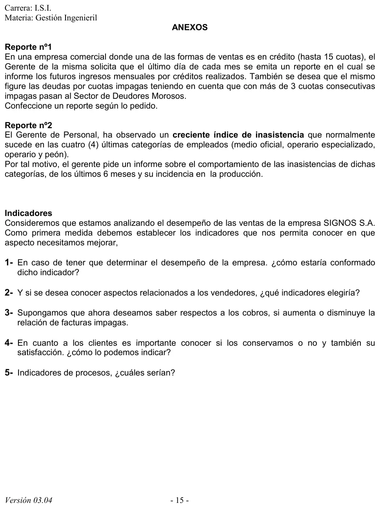

Práctica, anexos de reportes e indicadores
Práctica de la cátedra, 2017
Enunciado


Propuesta de respuesta
Respuesta no verificada. La propuso Luta Studios con inteligencia artificial y ningún docente la revisó. Puede tener errores.
Reporte 1. Ingresos futuros por créditos y cuotas impagas
Se emite el último día de cada mes y tiene dos partes. Los números son de ejemplo.
Ingresos futuros por créditos. Al 30/11
| Mes | Cuotas a vencer | Monto a cobrar |
|---|---|---|
| Diciembre | 120 | 360000 |
| Enero | 112 | 336000 |
| Febrero | 101 | 303000 |
| Total de los meses mostrados | 333 | 999000 |
Sigue un renglón por mes hasta el decimoquinto, porque los créditos llegan a 15 cuotas. Cada mes suma las cuotas que vencen en él, de todos los créditos vigentes.
Cuotas impagas. Al 30/11
| Cliente | Crédito | Cuotas impagas consecutivas | Monto adeudado | Situación |
|---|---|---|---|---|
| C-087 | 2093 | 4 | 12000 | Pasa a Deudores Morosos |
| C-112 | 2154 | 3 | 9000 | En mora, al límite |
| C-031 | 2207 | 1 | 3000 | En mora |
| Total | 8 | 24000 |
Va ordenado de más a menos cuotas impagas, así los que pasan a Deudores Morosos quedan arriba. Con más de 3 cuotas consecutivas impagas el cliente pasa, por eso C-087, con 4, ya no sigue en la cartera normal. C-112 está al límite, y con una cuota más impaga pasa el mes que viene.
Reporte 2. Inasistencias de las cuatro últimas categorías
Los últimos 6 meses, con el ausentismo por días del catálogo del apunte para cada categoría, y el rendimiento de la producción para ver su incidencia. Los números son de ejemplo. La columna de las cuatro juntas pondera por la cantidad de empleados, tomando 10 medios oficiales, 20 operarios especializados, 40 operarios y 20 peones.
Ausentismo e incidencia en la producción. Junio a noviembre
| Mes | Medio oficial | Operario especializado | Operario | Peón | Las cuatro juntas | Producción real sobre esperada |
|---|---|---|---|---|---|---|
| Junio | 3.0 % | 2.5 % | 4.0 % | 5.0 % | 3.8 % | 98 % |
| Julio | 3.2 % | 2.8 % | 4.5 % | 5.6 % | 4.2 % | 97 % |
| Agosto | 3.5 % | 3.0 % | 5.1 % | 6.2 % | 4.7 % | 95 % |
| Septiembre | 3.9 % | 3.4 % | 5.8 % | 7.0 % | 5.3 % | 93 % |
| Octubre | 4.2 % | 3.9 % | 6.4 % | 7.9 % | 5.9 % | 91 % |
| Noviembre | 4.6 % | 4.3 % | 7.1 % | 8.8 % | 6.6 % | 88 % |
Lectura. El ausentismo sube todos los meses en las cuatro categorías, y en el peón pasa de 5.0 % a 8.8 % en el semestre. A la par, el rendimiento baja de 98 % a 88 %. El reporte no prueba que una cosa cause la otra, pero le da al gerente el dato para ir a buscar la causa, empezando por peones y operarios.
Indicadores de las ventas de SIGNOS S.A.
Salen de las fórmulas y del catálogo del apunte, y de las perspectivas del Cuadro de Mando Integral.
1. Desempeño de la empresa. Se arma con eficacia, eficiencia y efectividad, con las fórmulas del apunte. RA y RE son las ventas alcanzadas y esperadas, CA y CE el costo alcanzado y esperado, y TA y TE el tiempo.
Los puntajes salen de las tablas de rangos del apunte. Se completa con el margen bruto, que es la utilidad bruta sobre las ventas netas.
2. Vendedores. Del catálogo de gestión comercial.
| Indicador | Fórmula |
|---|---|
| Desempeño del vendedor | Ventas de cada vendedor / ventas totales |
| Ventas por visita | Unidades monetarias vendidas / número de visitas realizadas |
| Rotación de vendedores | Vendedores cesados en el año / vendedores promedio en el año |
| Costes de venta | Costes de venta / costes totales |
3. Facturas impagas. Un porcentaje, que se compara mes a mes para ver si sube o baja.
Si la variación da positiva, la relación de impagas aumenta.
4. Clientes. Retención y satisfacción, del catálogo del apunte y de la perspectiva del cliente del Cuadro de Mando.
| Indicador | Fórmula |
|---|---|
| Retención | Clientes retenidos que solicitan retiro del servicio / total de clientes que solicitan el servicio |
| Satisfacción | Clientes que manifiestan insatisfacción / total de contactos atendidos. Debe ser decreciente |
5. Procesos. Del catálogo, para el proceso de ventas desde el pedido hasta la factura.
| Indicador | Fórmula |
|---|---|
| Entregas a tiempo | Pedidos entregados en fecha / total de pedidos entregados |
| Pedidos entregados completos | Pedidos entregados completos / total de pedidos entregados |
| Documentación sin problema | Facturas generadas sin errores / total de facturas |
| Cumplimiento de despachos | Número de despachos cumplidos / total de despachos requeridos |
Para la perspectiva del proceso interno, el Cuadro de Mando pide indicadores de calidad, tiempo de ciclo y costes de las operaciones.
Respuesta no verificada. Puede tener errores.
Se armó con las páginas del parcial y del final, secciones Reportes, Indicadores de gestión, Catálogo del apunte y El Cuadro de Mando a fondo.
Quedó en duda: Los números de los dos reportes son de ejemplo. En el reporte 2, el ausentismo de las cuatro categorías juntas pondera por la cantidad de empleados de cada una, que el enunciado no da, así que también es de ejemplo. El indicador de facturas impagas y su variación no están en el catálogo del apunte. Se armaron con la forma de porcentaje que el apunte explica.